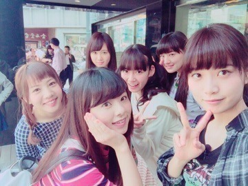
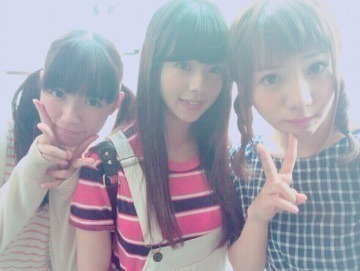

| 2015/04 05 Sun | 台湾。わんわん。 （＾Ｏ＾） |
今日も1日おつかれさま＠ 'ェ' ＠
まにだよ？ ろってぃーだよ？

モバメと755を４日間止めていた私は...
もう皆さんも情報が耳に入ったと思いますが...
『乃木團』で台湾に行ってきました！！！！！
日本ただいまヾ(＠⌒ー⌒＠)ノ✨✨
31日～3日,濃い４日間でした．
とりあえず台湾に行った理由は「乃木團！台湾LIVE～♩」です。
沢山、観光しロケもしてきました！
本当にびっくりです。まさか乃木團で台湾に行けるなんて。
でもまだ何も言えない～（ ｉ _ ｉ ）
色々楽しいこと面白いことあり過ぎで話したいこと,いっぱあ～～い
『のぎ天』見てね！！！
うん！その内配信されるから絶対見てね～（＾Ｏ＾）
乃木天スタッフさん,楽天さんに感謝です．
乃木團、集合

そして今日は名古屋で握手会でした！
昨日の晩、台湾からそのまま名古屋にきたんよ～
来てくれた皆 ありがとう。
明日は京都で握手会です！
よろしくね～。

そして... 握手会後にせーらの卒業セレモニー。
せーら卒業かぁ～。
まだ実感わかないなぁ～（ ｉ _ ｉ ）
同じ上京組としては せーら卒業ってやっぱ寂しいですね。
同じ歳で分かり合える事も沢山あって,
せーらとは なんかずっと一緒だったな...って思います。
せーらの知ってることは私は知らなくて
私が知ってることは せーらは知らなくて,
だからお互いに,悩んだりピンチな時は、助け合ってきました☺️
せーらは、バカで天然で,そんなキャラでやってきたけど,弱い部分もあり,でもちゃんと周りの事を見て、しっかりした考えを持っている優しい素敵な人間だと思います。
せーら卒業してもずーーーっとよろしくね！
ご飯もいこーね！
これからの人生もおもいっきり楽しんでください❤️
それじゃ、もぉ寝ます。
明日もポジティブポジティブ～。
おやすみなさい...。 まに。
コメント(297)
2015/04/05 00:30